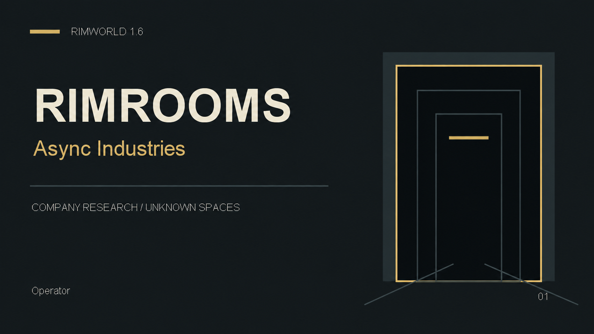

What this mod is, and the three pages worth reading before you start a colony.
Rimrooms — Async Industries
You run a branch office of a company that does contract work in the Backrooms.
Ordinary RimWorld colony play is untouched. What this adds is an employer, a machine that opens a way into somewhere else, and paperwork about both.
The contracts are a job, not the game. A space you surveyed is a real map that belongs to you — mine it, farm it, build a prison or a workshop in it, sell out of it. See what a coordinate is for.
Development build. Nothing here is a balance, performance or compatibility report.
Two rules that shape everything else
The only clock is the gate. An open connection has a duration. Nothing else does — no request, contract, offer, quote or trade ever expires, and nothing penalises you for taking your time. The corporation waits.
Every job has more than one way to finish. Each request and contract offers at least two routes of at least two different kinds: bring the thing, bring the record instead, substitute, purchase, have a crew testify, redirect to related work, or complete a research project.
Start here
| Install | Requirements, mod manager setup, load order |
| Your first hour | Power, gate, crew, first crossing |
| The three starts | Which opening to pick |
The game
| Gates and connections | The gate, what it holds open, what fits through |
| Beyond the gate | Coordinates, bands, what lives there |
| The company | Money, requests, contracts, research, staff |
| The interface | The Operations tab, keybinds, accessibility |
Reference
| Mods and expansions | What is required, what is optional |
| Multiplayer | What exists and what does not |
| Troubleshooting | When something refuses |
| Links | Workshop, collection, source |
| Credits |
In one minute
- A gate is an ordinary door you designate. No custom buildings.
- Opening a connection is work, not a button. An operator brings it up at a console over time.
- Eleven checks stand between a door and an open connection. The Machine pane numbers them.
- A first opening holds about thirty minutes of real time, and research extends it until the countdown goes away entirely.
- You can run three gates, and any of them dials any address you know.
- Everything through a gate is a coordinate — a saved address you can return to.
- You can dial an address nobody gave you. Discovering one is free; opening it is the cost.
- Each place held open costs a loaded map, so there is an allowance, and a gate says so when you have reached it.
- Things move between visits. Nothing tells you.
- The company pays into an account, not silver. Physical goods stay ordinary RimWorld goods.
- Your colonists work across a live connection: hauling, building, bills, research, medicine.
- A closed gate does not take your people. A stranded crew waits, and you go back for them.
- A branch in contact with the corporation never dies. Lose everyone and a crew arrives — and the cost comes out of your account.
Where the game disagrees with this wiki
Trust the game. Its panes read live state; a page here was written once. Every refusal in the game names its own cause, and that cause is the instruction.